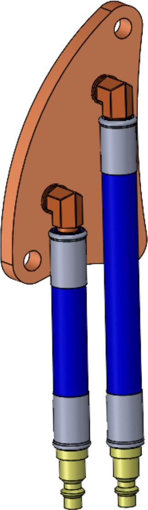
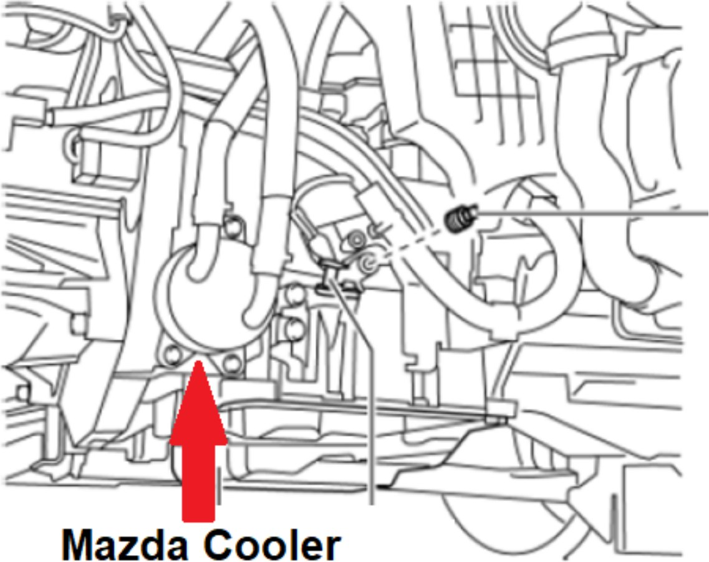

Doc no. MOC-TSB-23-02 // Vol. 23 No. 02 // Aug 28, 2023 // Transmission
Mazda ATF Adapter
New94959
A new transmission adapter for Mazda Skyactiv transmissions.
What's new
- Remove the external cooler from the transmission.
- Bolt the adapter directly to the transmission with the same 3 bolts that attach the cooler.
Two simple steps make for a quick, reliable transmission fluid exchange.
Contact
For more information, contact the Machine & Equipment Department at 866.244.6621.


Part numbers
| Part No. | Description | Notes |
|---|---|---|
| 94959 | Adapter, ATF, Mazda | Mazda Skyactiv transmissions |